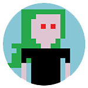
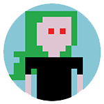
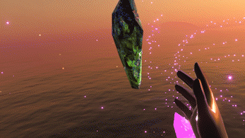

Delilah Pavoni
SHOW TIME!
Here are some of my favourite projects.
This is just an overview, not an extensive portfolio. Ask me more about my work!


Here are some of my favourite projects.
This is just an overview, not an extensive portfolio. Ask me more about my work!


O21 (VR Game)
A meditative VR experience. Observe the world you're immersed in.
Interact with the crystals to see and hear how the environment around you changes according to your actions.
Requires a VR headset and tracked controllers.
A meditative VR experience. Observe the world you're immersed in.
Interact with the crystals to see and hear how the environment around you changes according to your actions.
Requires a VR headset and tracked controllers.

Cable Detective - AWS re:Invent
Help save this year's AWS re:Invent!
Can you solve the mystery of the twisted cable tangler?
Help save this year's AWS re:Invent!
Can you solve the mystery of the twisted cable tangler?
Eden Unhearted (VR Game)
Explore the world of Netflix’s original anime series, Eden, by diving into a VR game that takes you on a trip through the show’s environment.
Bike through landscapes featured in the series, collecting apples and dodging obstacles while getting a close-up look at Eden’s luscious scenery.
Explore the world of Netflix’s original anime series, Eden, by diving into a VR game that takes you on a trip through the show’s environment.
Bike through landscapes featured in the series, collecting apples and dodging obstacles while getting a close-up look at Eden’s luscious scenery.
Tic Tac GUM: Chew & Play
Styled in 8-bit and starring your mouth as a controller, Chew & Play is the world’s first Snapchat gamified lens you control by chewing.
- üèÜ Award: FWA of the day - 22 June 2018
- üì∞ lbbonline: First ever chew powered snapchat lens games
Styled in 8-bit and starring your mouth as a controller, Chew & Play is the world’s first Snapchat gamified lens you control by chewing.

Tetris Twist
In Tetris Twist, you'll puzzle your way through different cities. Discover new, fun ways to play Tetris with a twist, or play Marathon Mode to experience the traditional gameplay.
In Tetris Twist, you'll puzzle your way through different cities. Discover new, fun ways to play Tetris with a twist, or play Marathon Mode to experience the traditional gameplay.
ELLINIKON Experience Centre
An old airport hangar becomes an interactive experience center for Ellinikon.
This ambitious project showcases the future of urban spaces through a synergistic blend of physical and digital design.
Visitors are invited to immerse themselves in the past, present, and future of the area, offering a unique glimpse into Europe's largest urban regeneration project.
In the image: one of the installations I built software for.
An old airport hangar becomes an interactive experience center for Ellinikon.
This ambitious project showcases the future of urban spaces through a synergistic blend of physical and digital design.
Visitors are invited to immerse themselves in the past, present, and future of the area, offering a unique glimpse into Europe's largest urban regeneration project.
In the image: one of the installations I built software for.
Shiseido - 'The Living Red Art Show'
Pop up Stand and experience for Shiseid and the project "The Living Red Art Show".
For this, an interactive application was built. Digital face scan, skin to promote beauty products in a fresh and entertaining way.
Image courtesy of moodiedavittreport and depicts the software that was created for this installation.
Pop up Stand and experience for Shiseid and the project "The Living Red Art Show".
For this, an interactive application was built. Digital face scan, skin to promote beauty products in a fresh and entertaining way.
Image courtesy of moodiedavittreport and depicts the software that was created for this installation.